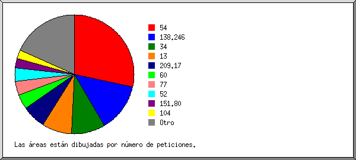
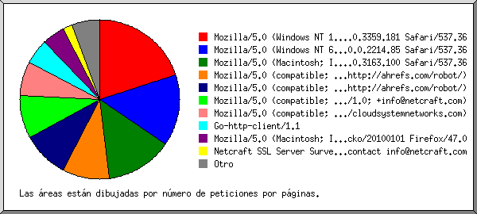
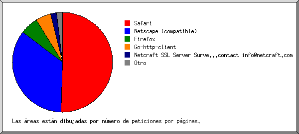
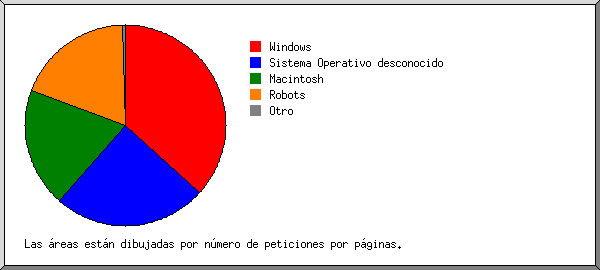
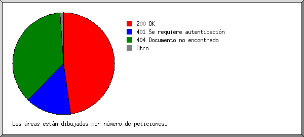
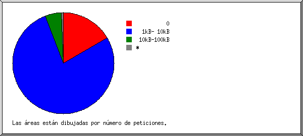
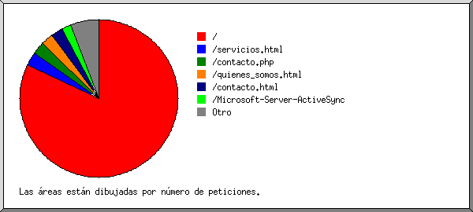

Estadísticas del servidor Web de aridosmoreno.cl
Estadísticas del servidor Web de aridosmoreno.cl
Programa iniciado a las Lun/31/Dic/2018 9:59 am.
Análisis de peticiones del Jue/13/Abr/2017 3:58 pm al Lun/31/Dic/2018 9:01 am (626.71 días).
Estadísticas del servidor Web de aridosmoreno.clPrograma iniciado a las Lun/31/Dic/2018 9:59 am.
Análisis de peticiones del Jue/13/Abr/2017 3:58 pm al Lun/31/Dic/2018 9:01 am (626.71 días).
(Ir a: Arriba | Resumen general | Informe mensual | Resumen diario | Resumen horario | Informe de dominios | Informe de organización | Informe de navegadores | Resumen de navegadores | Informe de Sistemas Operativos | Informe de códigos de estado | Informe de tamaño de archivos | Informe de Tipos de Archivo | Informe de Directorios | Informe de peticiones)
Los números entre paréntesis se refieren a 7 días al 31/Dic/2018 9:59 am.
Peticiones exitosas: 520 (14)
Peticiones exitosas por página: 479 (14)
Peticiones no logradas: 865 (0)
Peticiones redireccionadas: 4 (0)
Archivos diferentes solicitados: 21 (2)
Sistemas diferentes atendidos: 257 (2)
Transferencia total: 2.71 megabytes (82.83 kilobytes)
Promedio de transferencia por día: 4.43 kilobytes (11.83 kilobytes)
(Ir a: Arriba | Resumen general | Informe mensual | Resumen diario | Resumen horario | Informe de dominios | Informe de organización | Informe de navegadores | Resumen de navegadores | Informe de Sistemas Operativos | Informe de códigos de estado | Informe de tamaño de archivos | Informe de Tipos de Archivo | Informe de Directorios | Informe de peticiones)
Cada unidad ( ) representa 4 peticiones por páginas o fracción.
) representa 4 peticiones por páginas o fracción.
| mes | No. pet. | Págs. | |
|---|---|---|---|
| Abr 2017 | 10 | 8 |  |
| May 2017 | 18 | 14 |  |
| Jun 2017 | 3 | 3 | |
| Jul 2017 | 4 | 3 | |
| Ago 2017 | 9 | 9 | |
| Sep 2017 | 9 | 9 | |
| Oct 2017 | 18 | 18 | |
| Nov 2017 | 20 | 19 | |
| Dic 2017 | 22 | 21 | |
| Ene 2018 | 12 | 12 | |
| Feb 2018 | 16 | 15 | |
| Mar 2018 | 21 | 20 | |
| Abr 2018 | 22 | 22 | |
| May 2018 | 26 | 23 | |
| Jun 2018 | 26 | 26 | |
| Jul 2018 | 27 | 27 | |
| Ago 2018 | 34 | 28 | |
| Sep 2018 | 17 | 17 | |
| Oct 2018 | 8 | 8 | |
| Nov 2018 | 144 | 124 |   |
| Dic 2018 | 54 | 53 | |
Mes de mayor tráfico: Nov 2018 (124 peticiones por páginas).
(Ir a: Arriba | Resumen general | Informe mensual | Resumen diario | Resumen horario | Informe de dominios | Informe de organización | Informe de navegadores | Resumen de navegadores | Informe de Sistemas Operativos | Informe de códigos de estado | Informe de tamaño de archivos | Informe de Tipos de Archivo | Informe de Directorios | Informe de peticiones)
Cada unidad () representa 3 peticiones por páginas o fracción.
| día | No. pet. | Págs. | |
|---|---|---|---|
| Dom | 62 | 54 | |
| Lun | 50 | 44 | |
| Mar | 64 | 60 | |
| Mié | 77 | 71 | |
| Jue | 119 | 110 |  |
| Vie | 83 | 79 | |
| Sáb | 65 | 61 | |
(Ir a: Arriba | Resumen general | Informe mensual | Resumen diario | Resumen horario | Informe de dominios | Informe de organización | Informe de navegadores | Resumen de navegadores | Informe de Sistemas Operativos | Informe de códigos de estado | Informe de tamaño de archivos | Informe de Tipos de Archivo | Informe de Directorios | Informe de peticiones)
Cada unidad () representa 1 petición de una página.
| hr | No. pet. | Págs. | |
|---|---|---|---|
| 0 | 18 | 18 | |
| 1 | 16 | 15 | |
| 2 | 28 | 25 | |
| 3 | 24 | 22 | |
| 4 | 21 | 20 | |
| 5 | 31 | 30 | |
| 6 | 20 | 20 | |
| 7 | 16 | 15 | |
| 8 | 21 | 21 | |
| 9 | 19 | 19 | |
| 10 | 25 | 22 | |
| 11 | 32 | 26 | |
| 12 | 26 | 25 | |
| 13 | 20 | 19 | |
| 14 | 21 | 20 | |
| 15 | 28 | 19 | |
| 16 | 18 | 18 | |
| 17 | 19 | 17 | |
| 18 | 21 | 21 | |
| 19 | 17 | 13 | |
| 20 | 26 | 23 | |
| 21 | 10 | 9 | |
| 22 | 19 | 19 | |
| 23 | 24 | 23 | |
(Ir a: Arriba | Resumen general | Informe mensual | Resumen diario | Resumen horario | Informe de dominios | Informe de organización | Informe de navegadores | Resumen de navegadores | Informe de Sistemas Operativos | Informe de códigos de estado | Informe de tamaño de archivos | Informe de Tipos de Archivo | Informe de Directorios | Informe de peticiones)
Listado de los dominios, ordenados por cantidad de tráfico.
| No. pet. | %bytes | dominio |
|---|---|---|
| 520 | 100% | [direcciones numéricas sin resolver] |
(Ir a: Arriba | Resumen general | Informe mensual | Resumen diario | Resumen horario | Informe de dominios | Informe de organización | Informe de navegadores | Resumen de navegadores | Informe de Sistemas Operativos | Informe de códigos de estado | Informe de tamaño de archivos | Informe de Tipos de Archivo | Informe de Directorios | Informe de peticiones)

Listado de las 20 primeras organizaciones por número de peticiones, ordenadas por número de peticiones.
| No. pet. | %bytes | organización |
|---|---|---|
| 147 | 38.90% | 54 |
| 123 | 138.246 | |
| 62 | 16.03% | 13 |
| 30 | 7.86% | 151.80 |
| 27 | 7.36% | 104 |
| 13 | 3.54% | 185.35 |
| 12 | 3.27% | 45 |
| 12 | 3.20% | 5 |
| 10 | 2.72% | 159.65 |
| 9 | 2.44% | 34 |
| 9 | 2.45% | 138.197 |
| 8 | 2.18% | 174.138 |
| 6 | 1.64% | 159.203 |
| 6 | 200.7 | |
| 5 | 1.36% | 165.227 |
| 5 | 1.36% | 209.17 |
| 5 | 190.101 | |
| 4 | 0.82% | 52 |
| 4 | 1.09% | 142.93 |
| 3 | 186.21 | |
| 20 | 3.77% | [no listadas: 12 organizaciones] |
(Ir a: Arriba | Resumen general | Informe mensual | Resumen diario | Resumen horario | Informe de dominios | Informe de organización | Informe de navegadores | Resumen de navegadores | Informe de Sistemas Operativos | Informe de códigos de estado | Informe de tamaño de archivos | Informe de Tipos de Archivo | Informe de Directorios | Informe de peticiones)

Listado de los navegadores que representan, por lo menos, 1 petición de una página, ordenados por número de peticiones por páginas.
| No. pet. | Págs. | Navegador |
|---|---|---|
| 123 | 123 | Mozilla/5.0 (Windows NT 6.1; Win64; x64) AppleWebKit/537.36 (KHTML, like Gecko) Chrome/40.0.2214.85 Safari/537.36 |
| 117 | 117 | Mozilla/5.0 (Macintosh; Intel Mac OS X 10_12_6) AppleWebKit/537.36 (KHTML, like Gecko) Chrome/61.0.3163.100 Safari/537.36 |
| 131 | 110 | Mozilla/5.0 (compatible; AhrefsBot/5.2; +http://ahrefs.com/robot/) |
| 63 | 63 | Mozilla/5.0 (compatible; NetcraftSurveyAgent/1.0; +info@netcraft.com) |
| 22 | 22 | Netcraft SSL Server Survey - contact info@netcraft.com |
| 13 | 13 | Mozilla/5.0 (Windows NT 10.0; Win64; x64)AppleWebKit/537.36 (KHTML, like Gecko) Chrome/66.0.3359.181 Safari/537.36 |
| 7 | 7 | Go-http-client/1.1 |
| 5 | 5 | Mozilla/5.0 (compatible; Nimbostratus-Bot/v1.3.2; http://cloudsystemnetworks.com) |
| 3 | 3 | Mozilla/5.0 (Macintosh; Intel Mac OS X 10.11; rv:47.0) Gecko/20100101 Firefox/47.0 |
| 2 | 2 | Mozilla/5.0 (compatible; nsrbot/1.0; +http://netsystemsresearch.com) |
| 1 | 1 | es |
| 1 | 1 | tl |
| 1 | 1 | Mozilla/5.0 (Windows NT 6.3; WOW64; rv:49.0) Gecko/20100101 Firefox/49.0; |
| 1 | 1 | fr |
| 1 | 1 | ns |
| 1 | 1 | gt |
| 1 | 1 | hv |
| 1 | 1 | ir |
| 1 | 1 | wu |
| 1 | 1 | da |
| 1 | 1 | iu |
| 1 | 1 | ek |
| 1 | 1 | zp |
| 1 | 1 | sq |
| 14 | 0 | [no listados: 5 Navegadores] |
(Ir a: Arriba | Resumen general | Informe mensual | Resumen diario | Resumen horario | Informe de dominios | Informe de organización | Informe de navegadores | Resumen de navegadores | Informe de Sistemas Operativos | Informe de códigos de estado | Informe de tamaño de archivos | Informe de Tipos de Archivo | Informe de Directorios | Informe de peticiones)

Listado de los navegadores que representan, por lo menos, 1 petición de una página, ordenados por número de peticiones por páginas.
| no. | No. pet. | Págs. | Navegador |
|---|---|---|---|
| 1 | 253 | 253 | Safari |
| 253 | 253 | Safari/537 | |
| 2 | 203 | 180 | Netscape (compatible) |
| 3 | 22 | 22 | Netcraft SSL Server Survey - contact info@netcraft.com |
| 4 | 7 | 7 | Go-http-client |
| 7 | 7 | Go-http-client/1 | |
| 5 | 4 | 4 | Firefox |
| 3 | 3 | Firefox/47 | |
| 1 | 1 | Firefox/49 | |
| 6 | 1 | 1 | sq |
| 7 | 1 | 1 | da |
| 8 | 1 | 1 | wu |
| 9 | 1 | 1 | fr |
| 10 | 1 | 1 | hv |
| 11 | 1 | 1 | tl |
| 12 | 1 | 1 | ns |
| 13 | 1 | 1 | zp |
| 14 | 1 | 1 | ek |
| 15 | 1 | 1 | es |
| 16 | 1 | 1 | gt |
| 17 | 1 | 1 | ir |
| 18 | 1 | 1 | iu |
| 12 | 0 | [no listados: 4 Navegadores] |
(Ir a: Arriba | Resumen general | Informe mensual | Resumen diario | Resumen horario | Informe de dominios | Informe de organización | Informe de navegadores | Resumen de navegadores | Informe de Sistemas Operativos | Informe de códigos de estado | Informe de tamaño de archivos | Informe de Tipos de Archivo | Informe de Directorios | Informe de peticiones)

Listado de los sistemas operativos, ordenados por número de peticiones por páginas.
| no. | No. pet. | Págs. | SO |
|---|---|---|---|
| 1 | 137 | 137 | Windows |
| 124 | 124 | Windows desconocido | |
| 13 | 13 | Windows NT | |
| 2 | 120 | 120 | Macintosh |
| 3 | 126 | 112 | Sistema Operativo desconocido |
| 4 | 131 | 110 | Robots |
(Ir a: Arriba | Resumen general | Informe mensual | Resumen diario | Resumen horario | Informe de dominios | Informe de organización | Informe de navegadores | Resumen de navegadores | Informe de Sistemas Operativos | Informe de códigos de estado | Informe de tamaño de archivos | Informe de Tipos de Archivo | Informe de Directorios | Informe de peticiones)

Listado de los códigos de estado, por orden numérico.
| No. pet. | cód. de estado |
|---|---|
| 520 | 200 OK |
| 4 | 302 Documento encontrado en otro lado |
| 12 | 400 petición incorrecta |
| 209 | 401 Se requiere autenticación |
| 644 | 404 Documento no encontrado |
(Ir a: Arriba | Resumen general | Informe mensual | Resumen diario | Resumen horario | Informe de dominios | Informe de organización | Informe de navegadores | Resumen de navegadores | Informe de Sistemas Operativos | Informe de códigos de estado | Informe de tamaño de archivos | Informe de Tipos de Archivo | Informe de Directorios | Informe de peticiones)

| tamaño | No. pet. | %bytes |
|---|---|---|
| 0 | 147 | |
| 1B- 10B | 0 | |
| 11B- 100B | 0 | |
| 101B- 1kB | 0 | |
| 1kB- 10kB | 373 | 100% |
(Ir a: Arriba | Resumen general | Informe mensual | Resumen diario | Resumen horario | Informe de dominios | Informe de organización | Informe de navegadores | Resumen de navegadores | Informe de Sistemas Operativos | Informe de códigos de estado | Informe de tamaño de archivos | Informe de Tipos de Archivo | Informe de Directorios | Informe de peticiones)

Listado de las extensiones que representan, por lo menos, 0.1% del tráfico, ordenadas por cantidad de tráfico.
| No. pet. | %bytes | extensión |
|---|---|---|
| 414 | 77.54% | [directorios] |
| 65 | 16.85% | .html [Hypertext Markup Language] |
| 21 | 5.10% | .php [PHP] |
| 2 | 0.51% | .cgi [CGI scripts] |
| 18 | [no listadas: 1 extensión] |
(Ir a: Arriba | Resumen general | Informe mensual | Resumen diario | Resumen horario | Informe de dominios | Informe de organización | Informe de navegadores | Resumen de navegadores | Informe de Sistemas Operativos | Informe de códigos de estado | Informe de tamaño de archivos | Informe de Tipos de Archivo | Informe de Directorios | Informe de peticiones)

Listado de los directorios que representan, por lo menos, 0.01% del tráfico, ordenados por cantidad de tráfico.
| No. pet. | %bytes | directorio |
|---|---|---|
| 518 | 99.49% | [directorio raíz] |
| 2 | 0.51% | /cgi-sys/ |
(Ir a: Arriba | Resumen general | Informe mensual | Resumen diario | Resumen horario | Informe de dominios | Informe de organización | Informe de navegadores | Resumen de navegadores | Informe de Sistemas Operativos | Informe de códigos de estado | Informe de tamaño de archivos | Informe de Tipos de Archivo | Informe de Directorios | Informe de peticiones)

Listado de los archivos que representan, por lo menos, 20 peticiones, ordenados por número de peticiones.
| No. pet. | %bytes | última hora | archivo |
|---|---|---|---|
| 414 | 77.54% | 31/Dic/2018 9:01 am | / |
| 62 | 12.52% | 30/Dic/2018 9:56 am | /?66.249.64.72 |
| 57 | 11.43% | 26/Dic/2018 9:41 am | /?165.227.103.74 |
| 23 | 6.50% | 14/Dic/2018 4:13 am | /servicios.html |
| 21 | 5.10% | 8/Dic/2018 1:31 am | /contacto.php |
| 21 | 5.33% | 13/Dic/2018 1:16 pm | /contacto.html |
| 21 | 5.01% | 8/Dic/2018 12:10 am | /quienes_somos.html |
| 20 | 0.51% | 5/Ago/2018 3:13 pm | [no listados: 2 archivos] |